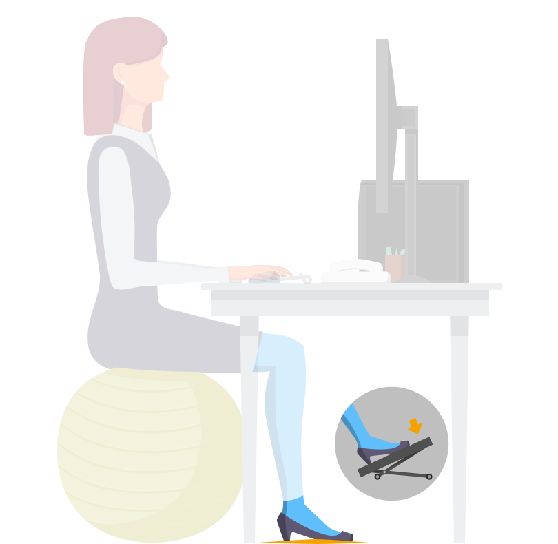

<div class="app-page-warm-up app-page">
    <div class="app-illustrations">
        <div class="step step-0 step-image"></div>
        <div class="transparent step step-1 step-image"></div>
        <div class="transparent step step-2 step-image"></div>
        <div class="transparent step step-3 step-image"></div>
        <div class="transparent step step-4 step-image"></div>
    </div>
    <div class="app-texts">
        <ul aria-label="Asseyez-vous face à votre poste de la manière suivante:">
            <li class="transparent step step-1 step-text">Pieds parallèles, posés au sol ou sur un repose pied</li>
            <li class="transparent step step-2 step-text">Genoux à hauteur et à largeur de bassin, formant un angle à 90°</li>
            <li class="transparent step step-3 step-text">Cambrez légèrement le bas du dos</li>
            <li class="transparent step step-4 step-text">Gardez la tête dans l’axe du dos, le menton doit rester à l’horizontale</li>
        </ul>
    </div>
</div>